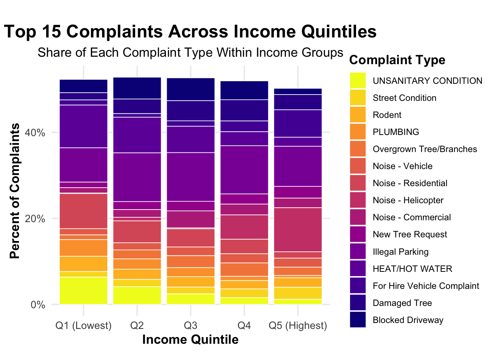

Income Inequality And Housing Complaint Patterns In New York City
Author
Nusrat Akter
Published
December 18, 2025
Introduction
Housing quality is an ongoing concern in New York City, where most of the housing stock is aging and densely occupied. The city’s 311 system allows residents to report housing-related issues, yet these complaints are not evenly distributed across neighborhoods. Some areas experience persistent problems related to heat, water, sanitation, and building maintenance, while others report far fewer issues. Understanding why these differences exist is important for effective housing policy and enforcement.
Neighborhood income may play an important role in shaping housing conditions and complaint patterns. Lower-income neighborhoods often face higher rent burdens, older buildings, and delayed repairs, which can contribute to poorer housing quality. At the same time, differences in reporting behavior across income levels may also influence observed complaint patterns. This study asks: to what extent do neighborhood income levels influence where housing complaints occur, the types of problems residents report, and the severity of those complaints across New York City?
To answer this overarching question, I analyze 311 housing complaints alongside socioeconomic data from the American Community Survey (ACS). Using spatial analysis and statistical modeling at the census tract level, this project examines how income is related to the distribution and nature of housing complaints across the city.
This analysis draws on four primary data sources, all of which are publicly available and reproducible.
First, NYC 311 Service Requests were obtained from NYC Open Data. These records capture resident-reported issues related to housing conditions, including complaints about heat, water leaks, unsanitary conditions, and other habitability concerns. The analysis focuses on complaints filed during 2023, allowing for consistent and recent housing issues.
Second, Housing Preservation and Development (HPD) violations were collected to provide more context on housing enforcement activity. HPD data include information on the severity and timing of violations, which helps validate patterns observed in resident-reported complaints.
Third, Department of Buildings (DOB) complaint data were included to capture structural and building-related issues that may not always appear in 311 data.
Finally, American Community Survey (ACS) 5-year estimates were used. Key variables include median household income, rent burden, and total housing units. ACS data were collected at the census tract level for all New York City counties from 2013 through 2023, allowing complaint records to be matched with contemporaneous neighborhood conditions.
All data sets were accessed using APIs, ensuring transparency and reproducibility. Census tracts were selected as the primary geographic unit because they approximate neighborhoods while providing stable boundaries and demographic information.
Data Cleaning And Preparation
Significant data cleaning was required before analysis. Across all data sets, date fields were standardized to ensure consistent time filtering. Records were restricted to complaints and violations occurring between January 1 and December 31, 2023.
HPD violation records were cleaned by converting multiple date fields into standard formats and constructing valid building identifiers. Only serious violations (Classes A, B, and C) were retained, as these represent meaningful housing quality concerns.
For the 311 data, only complaints with valid latitude and longitude were kept so they could be mapped correctly. Dates were split into year, month, and day of week for later analysis. Complaints missing key location or date information were removed to keep the data accurate.
The ACS data were cleaned to keep only the main variables used in the analysis, including median household income, rent burden, and the number of housing units. Variable names were simplified, and the data were limited to census tracts within New York City. These steps made sure all data sets matched in time and location and were ready for spatial joins and modeling.
Spatial Integration And Feature Engineering
Show The Code
# load the NYC census tracts (2020 boundaries)library(sf)library(tigris)nyc_tracts <-tracts(state ="NY",county =c("061", "047", "081", "005", "085"),year =2020,class ="sf",progress_bar =FALSE)
To link housing complaints to neighborhood characteristics, 311 complaint records were spatially joined to 2020 census tract boundaries using geographic coordinates. Each complaint was assigned a tract identifier (GEOID), allowing it to be matched with ACS socioeconomic data for the corresponding year.
After merging the ACS data, neighborhoods were grouped into income quintiles based on median household income. These quintiles were recalculated each year to reflect changes in the income distribution over time, with Q1 representing the lowest-income neighborhoods and Q5 the highest. This method allows neighborhoods to be compared relative to each other without being affected by inflation or long-term income changes.
This step also turned individual 311 complaints into a neighborhood-level data set, where each complaint is linked to both its location and the socioeconomic characteristics of the area.
Exploratory Data Analysis And Visualization
Initial exploratory analysis focused on understanding how complaint types differ across income groups. The Top 15 most common complaint types were identified and analyzed using both frequency counts and proportional distributions.
Distribution Of 311 Complaint Types By Neighborhood Income
Show The Code
library(dplyr)library(sf)library(broom)library(knitr)# prepare top 15 complaint datatop15 <- nyc311_income %>%st_drop_geometry() %>%count(complaint_type, sort =TRUE) %>%slice_max(n, n =15) %>%pull(complaint_type)bar_data <- nyc311_income %>%st_drop_geometry() %>%filter(complaint_type %in% top15) %>%count(income_quintile, complaint_type)# chi-square testchi_matrix_311 <-xtabs( n ~ income_quintile + complaint_type,data = bar_data)chi_table_311 <-chisq.test(chi_matrix_311) %>%tidy() %>%transmute(Test = method,Statistic =round(statistic, 1),DF = parameter,`P-value`=case_when( p.value <0.001~"< 0.001",TRUE~as.character(round(p.value, 3)) ) )# resultskable( chi_table_311,caption ="Chi-Square Test: Complaint Type by Income Quintile",align ="lccc")
Chi-Square Test: Complaint Type by Income Quintile
Test
Statistic
DF
P-value
Pearson’s Chi-squared test
6433.6
56
< 0.001
Show The Code
library(dplyr)library(ggplot2)library(scales)library(sf)# build bar databar_data <- nyc311_income %>%st_drop_geometry() %>%count(income_quintile, complaint_type) %>%group_by(income_quintile) %>%mutate(pct = n /sum(n)) %>%ungroup() %>%filter(complaint_type %in% ( nyc311_income %>%st_drop_geometry() %>%count(complaint_type, sort =TRUE) %>%slice_head(n =15) %>%pull(complaint_type) )) %>%mutate(income_quintile =factor( income_quintile,levels =c("Q1 (Lowest)", "Q2", "Q3", "Q4", "Q5 (Highest)") ) )# stacked bar chartplot_311_bar <-ggplot( bar_data,aes(x = income_quintile, y = pct, fill = complaint_type)) +geom_col(color ="white", linewidth =0.3) +scale_y_continuous(labels =percent_format()) +scale_fill_viridis_d(option ="plasma", name ="Complaint Type") +labs(title ="Top 15 Complaints Across Income Quintiles",subtitle ="Share of Each Complaint Type Within Income Groups",x ="Income Quintile",y ="Percent of Complaints" ) +theme_minimal(base_size =13) +theme(plot.title =element_text(face ="bold", size =18, hjust =0.5),plot.subtitle =element_text(size =13, hjust =0.5),axis.title =element_text(face ="bold"),panel.grid.minor =element_blank(),legend.title =element_text(face ="bold"),legend.text =element_text(size =9),plot.margin = ggplot2::margin(t =25, r =10, b =10, l =10) ) +guides(fill =guide_legend(reverse =TRUE))plot_311_bar

To examine whether certain housing complaint types are more common in lower-income neighborhoods, I first identified the 15 most frequent 311 complaint types citywide and examined how they are distributed across income quintiles. Complaint counts were converted into within-quintile percentages to focus on differences in complaint composition rather than total complaint volume.
The stacked bar chart shows clear differences in complaint patterns across income levels. Lower-income neighborhoods (Q1 and Q2) have a noticeably higher share of habitability-related complaints, especially HEAT/HOT WATER, WATER LEAK, and UNSANITARY CONDITION. In contrast, higher-income neighborhoods (Q4 and Q5) show a more balanced mix of complaint types and a smaller share of these essential housing issues.
A chi-square test of independence confirms that these differences are statistically significant (p < 0.001), indicating that complaint types are not randomly distributed across income quintiles. Together, these results provide strong evidence that neighborhood income is closely related to the types of housing problems residents experience and report.
Analytical Modeling: Income Effects On Housing Complaint Intensity
Building on the exploratory analysis, I use several statistical and models to examine how neighborhood income is related to housing complaint rates. These models allow the effect of income to differ across complaint types and capture both linear and nonlinear patterns, providing a clearer picture of how income shapes housing conditions across New York City.
Area-Level Data Construction For Modeling
Show The Code
library(dplyr)# aggregate 311 complaint points to the census-tract level and# compute complaint rates per 1,000 housing units by complaint type.model_df <- nyc311_income %>%st_drop_geometry() %>%group_by(GEOID, complaint_type) %>%summarise(complaints =n(),median_income =first(median_income),rent_burden =first(rent_burden),housing_units =first(housing_units),borough =first(borough),.groups ="drop" ) %>%mutate(complaints_per_1000_units = complaints / housing_units *1000 )
To analyze housing complaints at the neighborhood level, I aggregated individual 311 complaints to the census-tract level by complaint type. For each tract, I calculated complaint rates per 1,000 housing units, which allows for fair comparisons across neighborhoods with different housing sizes. This ensures that differences in complaint rates reflect housing conditions rather than the number of buildings in an area.
Linear And Log-Linear Regression Models
Show The Code
# collapse complaint types into a smaller, focused set# keep major housing-related complaints separate# group all remaining types into "Other"model_df_focus <- model_df %>%mutate(focus_type =if_else( complaint_type %in%c("HEAT/HOT WATER","WATER LEAK","UNSANITARY CONDITION" ), complaint_type,"OTHER" ),focus_type =factor(focus_type) )
To focus on serious housing issues, complaint types were grouped into three major habitability categories: heat and hot water, water leaks, and unsanitary conditions. All remaining complaints were grouped into an “Other” category. This simplifies the analysis while keeping the most important housing problems separate.
Show The Code
# linear regression with an interaction to allow income effects to vary by complaint group.lm_focus <-lm( complaints_per_1000_units ~ median_income * focus_type + rent_burden + borough,data = model_df_focus)
Log-Transformed Linear Regression: Income Effects on 311 Complaint Rates
Term
Estimate
Std. Error
t value
P-value
Baseline Complaint Rate (log scale)
1.4862
0.0286
51.96
< 0.001
Median Household Income
0.0000
0.0000
-11.14
< 0.001
Other Complaints
-0.4433
0.0285
-15.57
< 0.001
Unsanitary Condition
-0.2218
0.0410
-5.41
< 0.001
Water Leak
-0.3640
0.0491
-7.42
< 0.001
Rent Burden (%)
-0.0002
0.0000
-73.13
< 0.001
Brooklyn
-0.0204
0.0076
-2.70
0.007
Manhattan
0.0707
0.0095
7.45
< 0.001
Queens
-0.0516
0.0080
-6.48
< 0.001
Staten Island
-0.2393
0.0131
-18.28
< 0.001
Unspecified Borough
0.1645
0.0564
2.92
0.004
Income × Other Complaints
0.0000
0.0000
9.26
< 0.001
Income × Unsanitary Condition
0.0000
0.0000
2.32
0.02
Income × Water Leak
0.0000
0.0000
2.33
0.02
TipWhat Does This Show?
Both regression models show a negative relationship between neighborhood income and housing complaint rates, meaning higher-income neighborhoods tend to experience fewer complaints. This relationship is strongest for habitability-related issues such as heat and hot water, water leaks, and unsanitary conditions, even after controlling for rent burden and borough. The log-transformed model confirms that these findings are not driven by extreme values in a small number of neighborhoods.
This figure visually reinforces the regression results. Complaint rates are highest in lower-income neighborhoods and decline as income increases. The log-scaled y-axis highlights that the largest reductions in complaints occur at lower income levels, while changes become smaller in higher-income neighborhoods.
To capture potential nonlinear relationships between income and housing complaints, I estimated a random forest model. This approach allows income effects to vary across different ranges and captures interactions that may not be well represented in linear models.
Random Forest Variable Importance (Permutation Importance)
Variable
Importance
rent_burden
0.163
borough
0.047
complaint_type
0.030
median_income
0.030
TipWhat Does This Show?
The random forest model shows reasonable predictive performance, suggesting that neighborhood characteristics explain a meaningful share of variation in housing complaint intensity. Variable importance results indicate that median household income is one of the most influential predictors, alongside complaint type and borough. This finding reinforces earlier results from the regression models and highlights that income remains a key factor even when allowing for nonlinear relationships and complex interactions. Overall, the random forest results strengthen the conclusion that neighborhood income plays a central role in shaping housing conditions across New York City.
Partial Dependence Plots
Show The Code
# ensure reproducibility for PDP random forestsset.seed(123)
To better understand how income affects complaint rates across different housing issues, partial dependence plots were generated for heat and hot water, water leaks, and unsanitary conditions.
Show The Code
library(dplyr)library(ranger)library(pdp)library(ggplot2)library(scales)# filter to complaint typeheat_df <- rf_df %>%filter(complaint_type =="HEAT/HOT WATER")# fit random forestrf_heat <-ranger( complaints_per_1000_units ~ median_income + rent_burden + borough,data = heat_df,num.trees =500,importance ="permutation",respect.unordered.factors ="order")# partial dependence datapd_heat <-partial( rf_heat,pred.var ="median_income",train = heat_df)# pdp graphp_heat <-autoplot(pd_heat, rug =FALSE, train = heat_df) +geom_line(linewidth =1.3, color ="#D35400") +geom_point(size =1.7, alpha =0.8, color ="#D35400") +labs(title ="Income Effect On HEAT / HOT WATER Complaints",subtitle ="Partial Dependence From Random Forest (Ranger)",x ="Median Household Income",y ="Predicted Complaints Per 1,000 Housing Units" ) +scale_x_continuous(labels =dollar_format()) +theme_minimal(base_size =14) +theme(# titlesplot.title =element_text(face ="bold", size =18, hjust =0.5),plot.subtitle =element_text(size =13, hjust =0.5),# lablesaxis.title.x =element_text(face ="bold", size =13),axis.title.y =element_text(face ="bold", size =13),# gridlinespanel.grid.major.y =element_line(color ="grey85"),panel.grid.major.x =element_line(color ="grey92"),panel.grid.minor.y =element_blank(),panel.grid.minor.x =element_blank() )p_heat
Across all three complaint types, the partial dependence plots reveal strong nonlinear relationships between neighborhood income and housing complaint rates. Complaint rates are highest in low-income neighborhoods and decline sharply as income increases, with the steepest drops occurring in the lower- to middle-income range. This suggests that relatively small increases in income are associated with large improvements in housing conditions in these areas.
Beyond roughly $100,000–$120,000 in median household income, complaint rates begin to level off, indicating a threshold after which additional income is associated with smaller reductions in complaints. This pattern implies diminishing returns to income at higher levels and suggests that income has the greatest impact on housing quality in lower-income neighborhoods, where basic housing needs are more likely to be unmet.
Income Sensitivity Analysis Across Complaint Types
Show The Code
fit_income_slope <-function(df) {# if there is too little data or no variation in income, return NA since a slope cannot be estimatedif (nrow(df) <20|| dplyr::n_distinct(df$median_income) <2) {return(tibble(term ="median_income",estimate =NA_real_,std.error =NA_real_,statistic =NA_real_,p.value =NA_real_ )) }# check whether complaint types appears in more than one borough has_multi_borough <- dplyr::n_distinct(df$borough) >=2# include borough in the model only if it varies fml <-if (has_multi_borough) { complaints_per_1000_units ~ median_income + rent_burden + borough } else { complaints_per_1000_units ~ median_income + rent_burden }# fit the model and return only the median income coefficient broom::tidy(lm(fml, data = df)) %>%filter(term =="median_income") %>%mutate(borough_included = has_multi_borough)}
To examine how sensitive different complaint types are to income, I estimated separate regression models for each complaint type, focusing on the marginal effect of median household income on complaint rates.
library(dplyr)library(knitr)final_income_sensitive_clean <- final_income_sensitive %>%mutate(Complaint = stringr::str_to_title(gsub("_", " ", complaint_type)) ) %>%select( Complaint,`Effect per $10K Income Decrease`= effect_per_10k_decrease, Estimate,`P Value`=`p-value`,`Number of Tracts`= n_tracts )kable( final_income_sensitive_clean,caption ="Complaint Types with Strong and Reliable Income Sensitivity",align ="lcccc")
Complaint Types with Strong and Reliable Income Sensitivity
Complaint
Effect per $10K Income Decrease
Estimate
P Value
Number of Tracts
Homeless Person Assistance
0.286
-2.9e-05
0.001
310
Encampment
0.187
-1.9e-05
0.001
278
Lost Property
0.177
-1.8e-05
0.027
115
Illegal Posting
0.087
-9.0e-06
0.013
46
Standing Water
0.057
-6.0e-06
0.001
38
Street Sign - Damaged
0.053
-5.0e-06
0.01
181
Street Light Condition
0.047
-5.0e-06
0.003
289
Special Projects Inspection Team (Spit)
0.041
-4.0e-06
0.017
61
Unsanitary Condition
0.036
-4.0e-06
0.003
695
Paint/Plaster
0.035
-4.0e-06
0.003
403
Dirty Condition
0.035
-4.0e-06
0.005
482
Plumbing
0.035
-3.0e-06
0.004
470
Blocked Driveway
0.033
-3.0e-06
0.03
932
Elevator
0.029
-3.0e-06
0.028
155
Rodent
0.028
-3.0e-06
0.034
677
Flooring/Stairs
0.028
-3.0e-06
0.015
248
Door/Window
0.027
-3.0e-06
0.039
387
Sewer
0.023
-2.0e-06
0.013
216
General Construction/Plumbing
0.023
-2.0e-06
0.016
429
Illegal Dumping
0.020
-2.0e-06
0.008
387
Curb Condition
0.019
-2.0e-06
0.023
255
TipWhat Does This Show?
This analysis shows that income sensitivity varies widely across complaint types. After converting regression slopes into interpretable effect sizes, complaints related to basic habitability consistently rank as the most income-sensitive. A $10,000 decrease in median household income is associated with larger increases in complaints for issues such as heating, water leaks, and unsanitary conditions compared to other complaint categories.
After filtering for statistical significance and sufficient sample size, these habitability-related complaints continue to dominate the list of income-sensitive issues. This indicates that income is not just related to overall complaint volume, but is especially predictive of serious housing quality problems that directly affect health and safety.
How Does It Answer Our Main Question?
Taken together, the exploratory analysis and modeling results show a clear relationship between neighborhood income and housing complaint patterns across New York City. Income affects where complaints are concentrated, the types of housing problems residents report, and how severe those problems are.
Housing complaints are more concentrated in lower-income neighborhoods, even after adjusting for housing units and borough. This suggests that higher complaint rates in these areas are driven by poorer housing conditions rather than simply having more buildings.
Income also shapes the types of complaints being reported. Lower-income neighborhoods have a much higher share of complaints related to basic living conditions, such as heat and hot water issues, water leaks, and unsanitary conditions. In contrast, higher-income neighborhoods show a more balanced mix of complaint types and fewer habitability-related issues. Statistical tests confirm that these differences across income levels are not random.
Finally, income is strongly linked to complaint intensity. When complaints are measured per 1,000 housing units, both regression and machine-learning models show that complaint rates decline as income increases. The largest reductions occur at lower income levels, with smaller changes at higher incomes, suggesting that housing conditions improve substantially once neighborhoods reach a certain income threshold.
Overall, these findings show that neighborhood income is a key driver of housing inequality across the city. Income influences not only how many complaints are made, but also what kinds of housing problems residents experience and how severe those problems are.
Conclusion And Limitations
This project demonstrates that neighborhood income plays an important role in housing complaint patterns across New York City. Lower-income neighborhoods experience higher complaint rates and are more likely to report serious housing issues such as heat and hot water problems, water leaks, and unsanitary conditions. These patterns remain even after accounting for housing size and borough, indicating real differences in housing conditions across income levels.
There are several limitations to this analysis. The 311 data reflect reported issues, so housing problems may be under reported in some communities. The analysis also focuses on a single year of data, which limits the ability to examine long-term trends. In addition, income is only one factor influencing housing quality. Other factors such as building age, landlord behavior, and enforcement activity are not directly included. Finally, using census tracts may mask variation within neighborhoods. Despite these limitations, the results provide strong evidence that income is a major factor shaping housing complaints and housing conditions in New York City.
These findings have important implications for housing policy and enforcement. Since income is most closely linked to serious housing complaints, focusing inspections and resources on lower-income neighborhoods may be especially effective in improving housing conditions. Future research could build on this analysis by using data from multiple years, adding building-level information, or examining enforcement actions to better understand how housing conditions change over time. Overall, this study shows how complaint data can be used to identify ongoing housing problems and support more fair and targeted housing efforts across New York City.